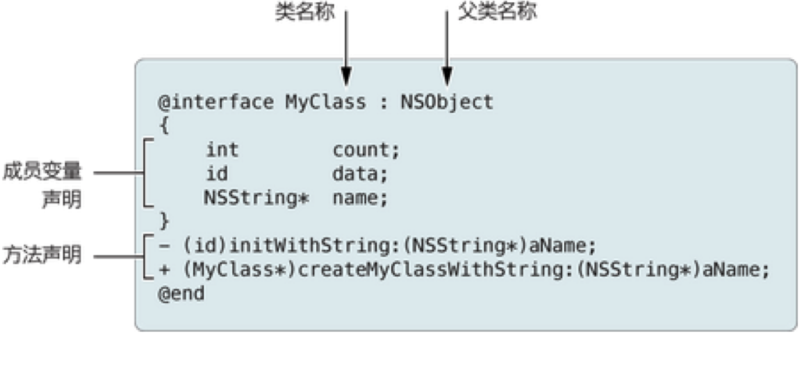
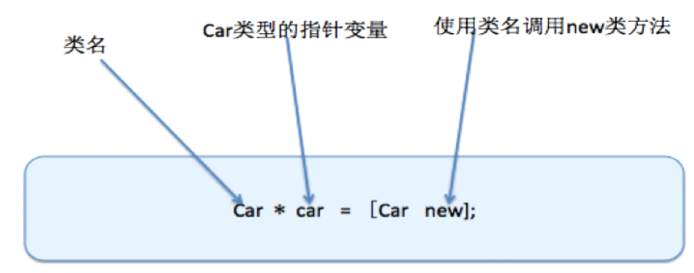
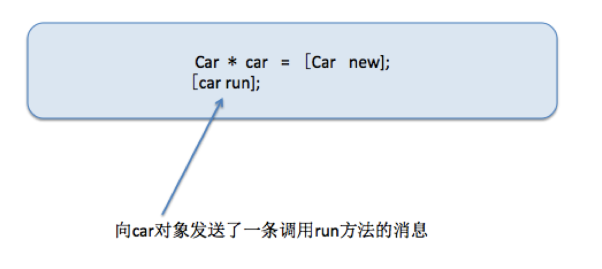

OC 函数
第一个OC类
本小节知识点
- 如何声明一个类
- 如何实现一个类
- 如何创建一个对象
- 对象的注意点
1.如何声明一个类
格式

注意：
- 1.必须以@interface开头，@end结尾
- 2.成员变量的声明，必须写在@interface与@end之间的大括号中
- 3.方法的声明必须在{}下面，不能写在{}中
2.如何实现一个类
@implementation MyClass
- (id)initWithString:(NSString *)aName
{
}
+ (MyClass *)myClassWithString:(NSString *)aName
{
}
@end
- 注意：
- 1.必须以@implementation开头，@end结尾
- 2.类名必须和声明的一致
3.如何创建一个对象
- 用类的方式告诉计算机，我们需要一个什么样的对象，之后我们要在程序中使用这个对象，就必须先创建一个对象

注意[Car new];做了三件事
- 1.在堆内存中开辟了一块新的存储空间
- 2.初始化成员变量(写在类声明大括号中的属性就叫成员变量,也叫实例变量)
- 3.返回指针地址
消息机制
- 使用对象调用方法就是OC中的消息机制
- OC中调用方法的格式：[类名或者对象名 方法名];

4.对象的注意点
- 可以通过 对象->对象成员(注意声明属性为:@public) 的方式访问对象中的成员,
- 每一个对象中都有一份属于自己的属性。
- 对其中一个对象的成员进行了修改。和另一个对象没有关系